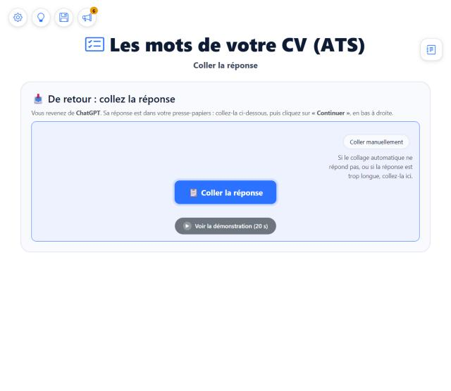
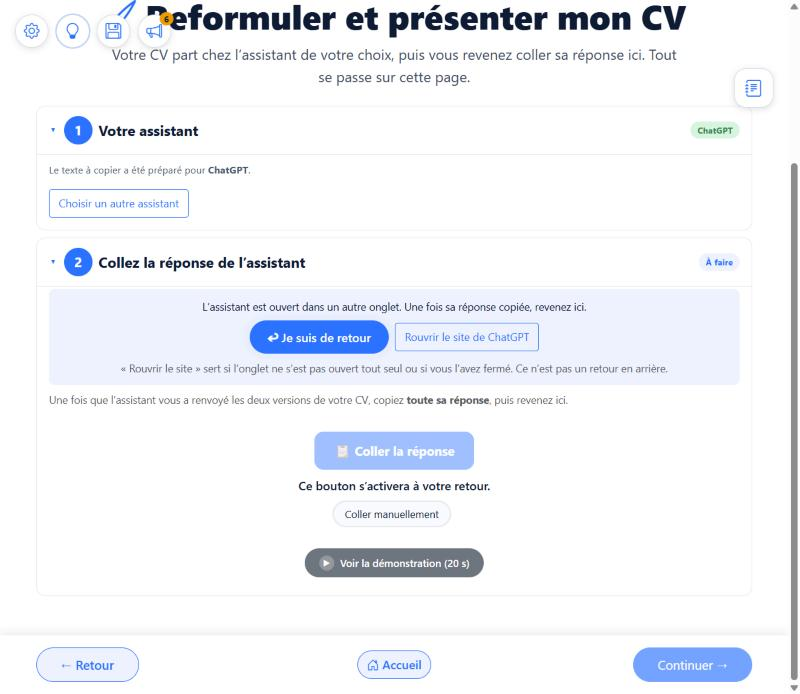
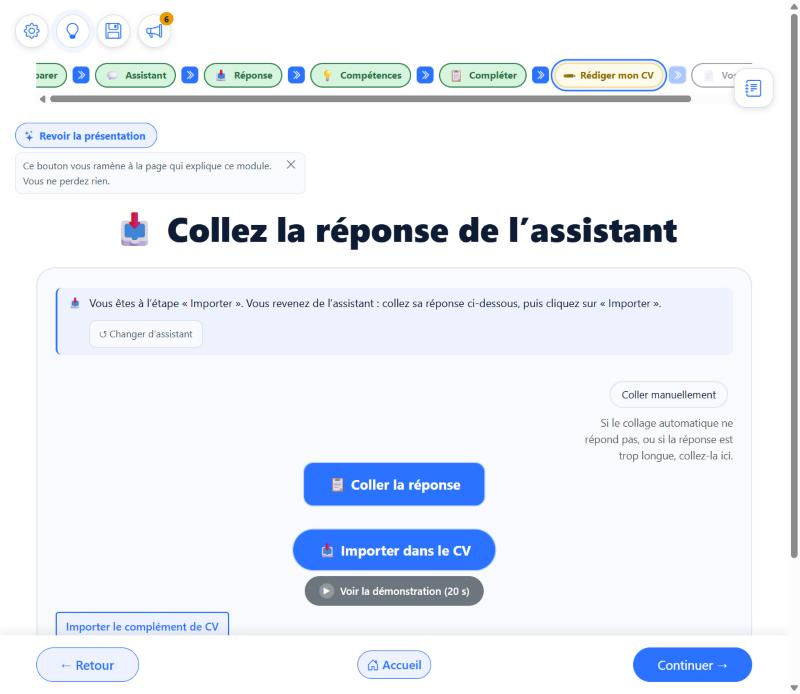
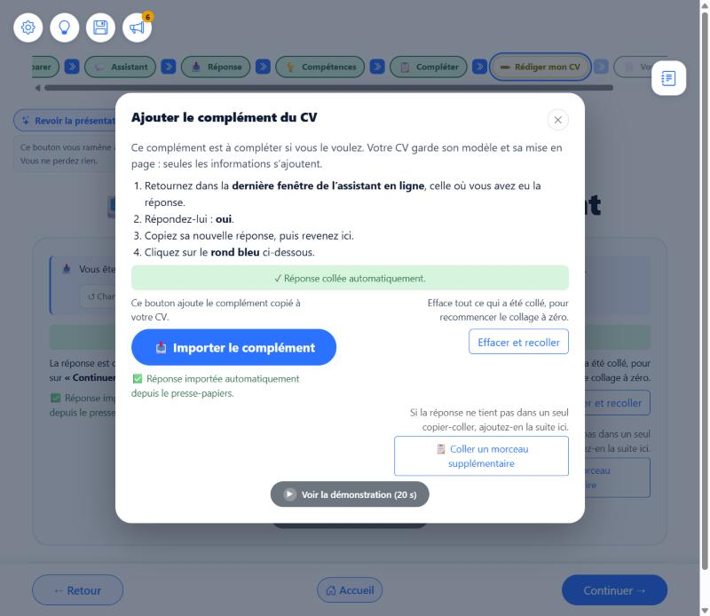

Rien n'est codé. Cette page répond à vos deux questions, montre les écrans réels, puis propose une fenêtre unique sur laquelle tout est cliquable pour de faux, avec uniquement des boutons (plus aucun texte cliquable). C'est la maquette de la dette B.17 que vous demandez depuis le 21/09 (« un seul écran partagé, identique visuellement et fonctionnellement »).
Chaque variante vient du code de l'application, pas de mon environnement de test. Les essais automatiques se contentent de les ouvrir vite, l'une après l'autre. J'ai relu les vingt-huit endroits du code qui dessinent un écran de collage : ils ont aujourd'hui cinq titres différents, au moins six phrases d'introduction différentes, huit noms différents pour le bouton d'import (voir le tableau ci-dessous), des boutons ronds ou rectangulaires, et des particularités propres à chaque module.
Conclusion : la variété est bien réelle, et elle est née de l'histoire de l'application (un module après l'autre, chacun avec son écran de collage). Elle est inscrite en dette dans les briques communes (B.17) depuis le 21/09.
| Famille d'écrans | Titre | Bouton d'import | Particularités propres |
|---|---|---|---|
| Analyser ma candidature (Bilan, 5 écrans), Les mots de votre CV, Comparer mes pistes, Un CV plusieurs métiers | « De retour : collez la réponse » | « Continuer » de la barre du bas | Phrase « Sa réponse est dans votre presse-papiers… » |
| Vos documents, Créer mon CV, Découvrir mes compétences (page de collage), Un CV plusieurs métiers | « Collez la réponse de l'assistant » | « Importer dans le CV / la lettre / la préparation » (puis « Continuer ») | « Changer d'assistant », complément de CV, deux chemins pour le complément |
| Reformuler, Préparer la lettre et l'entretien | Bloc « 2 Collez la réponse de l'assistant » avec une pastille « À faire » | « Continuer » de la barre du bas + « Effacer et recoller » maison | « Je suis de retour », « Rouvrir le site » |
| Lettre, entretien (version rapide) | Aucun | « Importer ma lettre », « Importer ma préparation » | boutons maison |
| Cohérence (2), Découverte (étape 4), Regard extérieur, Un regard sur mon CV | « Collez la réponse de l'assistant » ou aucun | « Importer » (rond), « Lire la réponse » | un encart différent par module (avis sur la consigne, Ctrl + C, « En attente du message complet ») |
| Fenêtres « Amélioration » et « Titre et accroche » du Bilan | « Collez la réponse de ChatGPT » (nom de l'assistant) | « Importer » rond | bouton « Ouvrir … maintenant » si le navigateur a bloqué |
| Complément de CV (4 endroits) | « Le complément de votre CV », « Ajouter le complément du CV »… | « Ajouter à mon CV », « Importer le complément » | « Étape 2 sur 2 », « rond bleu » (faux), « Passer » |
Autre défaut relevé au passage : dans les deux fenêtres du Bilan, le choix de l'assistant utilise des couleurs écrites en dur, qui n'ont pas de version pour le mode sombre.

Les mots de votre CV : page, titre « De retour : collez la réponse ».

Reformuler : bloc numéroté « 2 », « Je suis de retour », « Rouvrir le site », bouton grisé.

Découvrir mes compétences : votre capture, trois boutons.

Fenêtre du complément : encore un autre dessin, avec « rond bleu ».
Le même dessin, au même endroit, pour tous les modules. Ce qui change d'un module tient dans trois cases fixes : le nom du module (petite ligne en haut), le conseil « Bon à savoir » (encadré jaune, vide quand il n'y a rien à dire) et le texte du bouton de suite (en bas à droite). Changez le module, le passage et l'assistant ci-dessous pour le voir. Sur un module à deux passages, une petite pastille discrète « Premier passage » ou « Deuxième passage » s'affiche sous le nom du module (plus visible qu'avant, mais jamais plus forte que le gros bouton) ; sur un module à un seul passage, rien (aucun besoin). Le premier et le deuxième passage chez l'assistant ont exactement la même fenêtre : seuls changent la pastille « Passage 1 sur 2 » et les deux messages (ce qui se passe, et en quoi ce passage diffère du premier).
Le bouton ci-dessus ne marche pas ? Sur certains navigateurs, la copie automatique n'est pas autorisée. Si vous avez du mal à coller, vous pouvez le faire vous-même :
Collez la réponse de l'assistant dans le cadre, puis cliquez sur « Vérifier ce texte ».
Rien n'a été ajouté à votre travail, vous n'avez rien perdu. Le texte collé ne contient pas les informations attendues : l'assistant a peut-être répondu à autre chose, ou la copie est incomplète.
La suite n'a pas pu être jointe à la première partie. Si vous recommencez, le premier morceau est effacé aussi : tout repart de zéro.
➕ Votre CV est prêt. Le complément le rend plus complet. Ce n'est pas obligatoire : vous pouvez continuer sans.
Vous pourrez l'ajouter plus tard : le bouton « Ajouter le complément du CV » reste disponible sur « Vos documents » et au moment de valider la mise en page.
| Ce qui existe aujourd'hui | Dans la fenêtre unique |
|---|---|
| Passage chez l'assistant : décompte, « Ouvrir maintenant », « Je suis de retour », « Rouvrir le site », ouverture bloquée | Le bandeau bleu du haut, une phrase et deux boutons : « Je suis de retour » (obligatoire, gardé : c'est la personne qui dit qu'elle est revenue, sans détection automatique) et « Rouvrir ChatGPT » (qui recopie le texte à envoyer, comme aujourd'hui). Même endroit partout, y compris dans les fenêtres du Bilan. |
| Premier passage chez l'assistant : rien n'explique ce qui se passe | Un encadré « Ce qui se passe » (une ou deux phrases) sous le titre : de quoi il s'agit, ce qui vient d'arriver. |
| Deuxième passage chez l'assistant : une fenêtre différente, sans explication | La même fenêtre, avec la pastille « Passage 2 sur 2 » et un second encadré jaune « En quoi ce passage est différent du premier » (nouveau texte à envoyer, nouvelle réponse à coller). |
| « Changer d'assistant » | Bouton en pied de fenêtre, qui propose les assistants sous forme de boutons. Invisible partout, sauf après un échec de la vérification (message doux « cette réponse n'a pas pu être utilisée, rien n'a été ajouté ») : c'est alors seulement que le problème vient probablement de l'assistant. Pas sur « Coller à la main » (la réponse est peut-être bonne, c'est le navigateur qui bloque le collage), pas sur « Réponse bien reçue », pas sur le complément (changer d'assistant ferait repartir à zéro). |
| Particularités de chaque assistant (connexion demandée, limites sans compte) | L'encadré jaune « Bon à savoir », rempli à partir d'une seule liste d'assistants que vous relisez. Faits retenus : seul ChatGPT fonctionne sans compte avec nos textes ; Perplexity est limité sans compte ; les autres demandent un compte. Aucun conseil ne lie la coupure d'une réponse à un assistant ou à l'absence de compte : tous peuvent couper une longue réponse (voir 4 ter). |
| Encarts propres à un module (avis sur la consigne du Regard, Ctrl + C de Découverte, « En attente du message complet ») | La même case « Bon à savoir » : un module donne son texte, il n'a pas son propre dessin. |
| Vidéo « Voir la démonstration (20 s) » | Bouton en pied de fenêtre, visible seulement après un échec de la vérification (comme « Changer d'assistant »). |
| « Coller manuellement » (et son texte d'explication) | Le grand bouton s'appelle « Coller la réponse (opération automatique) ». Plus bas, bien séparé, un court texte explique la différence (« la copie automatique n'est pas autorisée sur certains navigateurs ; si vous avez du mal à coller, collez vous-même ») puis le bouton « Coller à la main ». La zone de texte s'ouvre avec un seul bouton : « Vérifier ce texte ». |
| Phrase « Les deux versions de votre CV sont bien lisibles dans la réponse » | Reformulée, sans mot qui prête à confusion : « La réponse est complète et lisible : elle contient bien votre CV. » Le grand « Réponse bien reçue » est gardé. Le compteur « (2 morceaux collés) » est gardé, en gras. |
| « Effacer et recoller », « Coller un morceau supplémentaire » | « Coller la suite » : seulement quand la réponse est coupée (c'est le gros bouton, qui change de nom). « Recommencer le collage » : seulement sur l'écran « Réponse inutilisable », avec son effet écrit (il efface tout, premier morceau compris). Ni l'un ni l'autre sur « Réponse bien reçue ». |
| Complément de CV (bandeau, écran « Étape 2 sur 2 », rubrique, fenêtre) | Le même panneau, une deuxième fois. Un seul bouton pour continuer sans : « Continuer sans le complément », dans la barre du bas (le « Passer, je vois mon CV » du milieu disparaît : il faisait la même chose). À sa place, un bouton « Voir ce que le complément ajoute » qui montre, sans quitter la page, ce que la personne y gagne. Rappel gras : « Vous pourrez l'ajouter plus tard ». |
| Boutons « Importer », « Importer dans le CV », « Importer ma lettre », « Lire la réponse » | Disparaissent. Le texte du bouton de suite (en bas à droite) dit l'action : « Ajouter à mon CV », « Voir l'analyse », « Lire la réponse ». |
| Messages d'erreur de lecture, « profil inexploitable », reconnaissance d'un complément collé au mauvais endroit | Conservés tels quels : ils s'affichent dans la même zone (vert, jaune ou rouge). |
Dans la maquette ci-dessus, le choix « Passage 1 sur 2 » puis « Passage 2 sur 2 » montre la même fenêtre : seule la pastille change, avec l'encadré « Ce qui se passe » et, au deuxième passage, l'encadré jaune « En quoi ce passage est différent du premier ». Les textes sont des propositions : je les écris, vous les relisez mot à mot avant tout code.
Votre principe, retenu : on ne pousse jamais l'assistant à découper sa réponse. Le but est la réponse entière en un seul message, pour limiter les allers-retours entre l'assistant et l'application. Le mécanisme ci-dessous est un filet de sécurité pour le seul cas où l'assistant ne peut vraiment pas : mieux vaut deux allers-retours avec une réponse complète qu'un seul aller-retour avec une réponse coupée sans que personne le sache. Il ne concerne pas le complément de CV, qui reste ce qu'il est (démarche normale en deux passages, voir plus bas).
Aujourd'hui, non, pas tel quel. Le complément de CV est lié au texte du CV (prompts/cv.md) : à la fin de sa première réponse, l'assistant pose la question « voulez-vous le complément de CV ? », et sa seconde réponse est un autre bloc de données, avec ses propres clés, que l'application reconnaît et fusionne dans le CV. Une réponse coupée, c'est l'inverse : c'est la même réponse, dont il faut ajouter la fin avant de la lire. Ce que l'on peut partager, c'est le dessin (même fenêtre, même geste de collage, même compteur), pas le fonctionnement. D'où deux titres distincts : « Le complément de votre CV » et « La suite de la réponse ». Un complément de message est donc bien faisable, mais c'est un mécanisme neuf à coder.
Vous avez raison : la plus-value de l'application, c'est de ne pas laisser passer une réponse abîmée ou douteuse. Il y a deux leviers, côté texte envoyé et côté code, et ils se complètent.
| Question | Comment | Fiabilité |
|---|---|---|
| 1. Est-elle complète ? | Dans chaque texte envoyé, un dernier champ « fin » (par exemple "fin":"complet") que l'assistant n'écrit que s'il est arrivé au bout. Le code vérifie aussi que le bloc est refermé, que toutes les rubriques attendues sont là et que le nombre d'éléments demandés est atteint. | Forte : c'est de la forme, vérifiable à coup sûr. |
| 2. Reste-t-elle fidèle à ce que la personne a donné ? | Le code compare ce que l'on peut comparer : employeurs, postes, dates, diplômes, chiffres cités dans la réponse, contre le profil de la personne. Un élément absent du profil est signalé « à vérifier », jamais corrigé ni bloqué. | Moyenne : le code compare des mots, il ne juge pas le vrai du faux ; des reformulations légitimes peuvent donner de fausses alertes, d'où un ton doux et jamais bloquant. |
| 3. Est-elle pertinente ? | Ce qui se mesure déjà (doublons de missions) reste. Le reste est un jugement : l'application montre ce qu'elle a contrôlé, la personne garde la décision. | Limitée : aucun code ne remplace la relecture de la personne. |
Sous le « Réponse bien reçue » vert, une courte liste « ce qui a été vérifié » (voir la maquette, étape « Bien reçue ») : « complète », « toutes les rubriques sont là », puis une ligne « À vérifier » toujours la même, sans mot technique : relire son CV pour voir que tout ce que l'on a indiqué y figure et que rien n'est répété. L'alerte précise (deux phrases qui disent presque la même chose, citées telles quelles) s'affiche sur la page du CV, seulement si besoin, avec les mots de la personne et sans les mots « mission » ou « expérience ». Jamais de diagnostic sur la personne.
+ La personne est protégée des dérives et comprend pourquoi. − Un champ de plus dans chaque texte envoyé ; du travail par module (environ quatorze textes) ; les fausses alertes du contrôle 2 sont à régler avec vos essais. Ordre proposé : contrôle 1 pour tous les modules d'abord (peu coûteux, très fiable), contrôle 2 pour le CV, la lettre et l'entretien (là où l'invention fait le plus de mal), contrôle 3 plus tard.
Pour que la personne ne se perde jamais, je propose quatre règles, appliquées à tous les écrans ci-dessous.
| Écran | Ce que la personne fait (en bleu) | Boutons dans la fenêtre | Sorties |
|---|---|---|---|
| Chez l'assistant | Copier sa réponse, revenir | « Je suis de retour », « Rouvrir ChatGPT » | Aucune autre |
| Prête à coller | Un clic | « Coller la réponse (opération automatique) », « Coller à la main » | Aucune |
| Bien reçue (vert) | Rien à lire de plus : le bouton du bas est le seul actif | Aucun (la liste « ce qui a été vérifié » et « À vérifier ») | Aucune : la réponse est bonne |
| Coupée (jaune) | Trois étapes : retourner, écrire « suite », coller la suite | Le gros bouton devient « Coller la suite » | Aucune. Si la suite échoue : écran « inutilisable » |
| Inutilisable (saumon) | Deux étapes : recommencer, ou essayer un autre assistant | « Recommencer le collage » | « Changer d'assistant », « Voir la démonstration » |
| Complément de CV | Trois étapes : retourner, répondre « oui », coller | « Coller le complément », « Voir ce que le complément ajoute » | « Continuer sans le complément » (barre du bas) |
+ Un système lisible : une couleur, un sens ; un écran, un geste. − Des textes à revoir partout (vocabulaire) ; des étapes bleues à poser dans chaque fenêtre existante (≈ 28 écrans).
Vous voulez un seul comportement partout. Voici les trois façons de l'obtenir, avec leurs bénéfices et leurs risques.
Effort : élevé (composant partagé par une trentaine d'écrans). Risque maîtrisé par le branchement un par un.
| Question | Ma recommandation (avec bénéfice et risque) | Autre choix |
|---|---|---|
| Q1. Que fait « Coller la réponse » ? | (Recommandé) Option 1. + un seul comportement, confirmation avant d'ajouter, rien d'abîmé si la réponse est mauvaise. − deux clics. | Option 3 (votre idée de départ) ou option 2 (un seul clic), avec les risques ci-dessus. |
| Q2. Fenêtre ou page ? Aujourd'hui : des pages, des blocs repliables et des fenêtres. | (Recommandé) Le même panneau, posé dans la page partout où c'est possible (conforme à votre règle « minimiser les fenêtres »), et dans une fenêtre seulement là où il est déjà dans une fenêtre aujourd'hui (les deux écrans du Bilan). + aucun parcours bouleversé. − deux habillages (page ou fenêtre) pour le même contenu, mais un seul code. | Tout dans la page, y compris les deux écrans du Bilan : + plus aucune fenêtre ; − il faut revoir ces deux parcours. |
| Q3. Le « Bon à savoir » par assistant. Les textes à écrire (connexion demandée, avis sur la consigne…). | (Recommandé) Une seule liste, que vous relisez : un texte court par assistant et par cas. Faits retenus : seul ChatGPT fonctionne sans compte avec nos textes, Perplexity est limité sans compte, les autres demandent un compte ; la coupure d'une réponse n'est liée à aucun assistant ni au compte (voir 4 ter). + la personne est prévenue avant l'ennui. − les textes peuvent vieillir quand les assistants changent : à revérifier de temps en temps. | Pas de « Bon à savoir » par assistant, seulement par module : + moins de textes à tenir à jour ; − la personne découvre les limites d'un assistant en cours de route. |
| Q4. Réponse coupée : la démarche de la section 4 ter ? | (Recommandé) Les trois étages : phrase commune dans tous les textes (ligne [SUITE]), détection par l'application, fenêtre « La suite de la réponse ». + aucune coupure silencieuse, rien n'est perdu, même fenêtre que le reste. − un mécanisme neuf à coder et à tester sur chaque module ; une phrase de plus dans chaque texte à envoyer. | Détection seule, sans toucher aux textes : + aucun texte modifié ; − on ne saurait pas dire à la personne que l'assistant prévoit une suite. Ou ne rien faire : − les coupures restent silencieuses. |
| Q5. Compenser les limites : les trois contrôles de la section 4 quater ? | (Recommandé) Contrôle 1 partout, contrôle 2 sur CV, lettre et entretien, contrôle 3 plus tard. + la personne est protégée des réponses coupées ou inventées, et sait ce qui a été contrôlé. − un champ de plus par texte envoyé, du travail par module, des fausses alertes à régler en essais. | Contrôle 1 seulement : + rapide et très fiable ; − rien contre les informations inventées. Ou tout d'un coup : − trop de chantiers en même temps. |
| Q6. Les quatre règles et le tableau de la section 4 quinquies ? | (Recommandé) Oui, tel quel. + une règle simple à retenir pour la personne et pour tous les futurs écrans. − beaucoup d'écrans à reprendre, un par un, avec vérification du vrai parcours à chaque fois. | Appliquer seulement le bleu des étapes, sans les autres règles : + plus rapide ; − les boutons de sortie resteraient incohérents d'un écran à l'autre. |